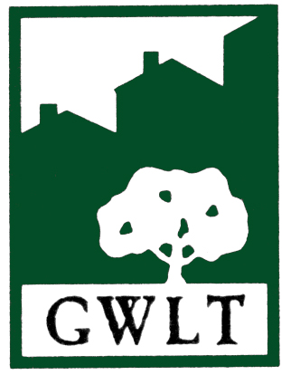

Geospatial Researcher – NASA DEVELOP National Program, June 2014 - August 2014
Geospatial Researcher – NASA DEVELOP National Program, June 2014 - August 2014
Analyzing changes in wetland health and extent from 2000-2015 in the Albemarle-Pamlico watershed. Wrote the python script used to calculate a series of vegetation indices, such as Green NDVI and NDPI, derive shoreline changes, and create a series of map outputs. Using results fill in time steps between NOAA C-CAP data and provide a more detailed understanding of wetland change overtime. Presented results at NASA Headquarters and to partner organization at NASA DEVELOP close out.
 Part-time GIS Assistant– Town of Acton, MA. August 2014 - Present
Part-time GIS Assistant– Town of Acton, MA. August 2014 - Present
Responsible for assisting the GIS Coordinator in managing and updating the Town’s GIS database. Communicating with outside contracted firm and various Town Departments on updating the GIS web-viewer, parcel information, and wetland delineation. Figured out how to represent traffic rules and orders in the GIS with the Engineering Department. Helped coordinate a seven department, 25 person move from Town Hall to a new location for renovations.
GIS Intern – Town of Acton, MA. June 2014 – August 2014
Worked with GIS and Engineering department to manage and create datasets. Geocoded accident history and street cut datasets. Combed through drainage data and used GPS points and as-built data to compile an update drainage dataset for the Town. Digitized crosswalks, snow-plow routes, and NSTAR electric data.
GIS Intern - Greater Worcester Land Trust, Worcester, MA. 2012.
Worked with the organization to determine suitable way to link Greater Worcester Land Trust protected land to the Midstate Trail. Used ArcGIS to evaluate land ownership and analyze potential pathways.
Research
Evaluating conflict surrounding mineral extraction in Ghana: Assessing the spatial interactions of large and small-scale mining
Used Landsat imagery to identify areas of small-scale mining and assess the spatial overlaps with large-scale concessions. Contextualized findings within an analysis of all the recorded conflicts and agreements between the two groups. Currently preparing the work for submission to an academic journal.
The participation of civil society in the formation of Boston's Rose Kennedy Greenway
Used over one hundred historical Boston Globe articles to assess the ways in which civil society groups heavily influenced and shaped the process surrounding the formation of the Rose Kennedy Greenway.
Skills
- GIS programming with python and R
- Web mapping and website building
- Indepth knowledge and understanding of ArcGIS and Idrisi platforms
- Comfort and understanding of QGIS and GIMP
- In depth understanding of vector data analysis and raster image processing
- ArcGIS geodatabase construction and management
- High level research, writing, and communication skills
- High quality map production
Education
Clark University, Worcester, MA. Class of 2015.
Masters of Science, Geographic Information Science. Graduated August 2015. GPA: 4.09/4.00
Clark University, Worcester, MA. Class of 2014.
Bachelors of Arts, Double Major in Geography and Sociology. Graduated May 2014. GPA: 3.70/4.-0, Earned high honors in Geography
Pontificia Universidad Católica de Valparaíso
Valparaíso, Chile, International Study Abroad, Spring 2013.
Honors and Awards
- Addams-Mills Award - One to two recipients each year who display strong academic contributions and an established commitment to community service. Awarded by Clark University Sociology Department in May 2014.
- High Honors in Geography
- Gamma Theta Upsilon International Geography Honor Society
- Alpha Kappa Delta Sociology Honor Society